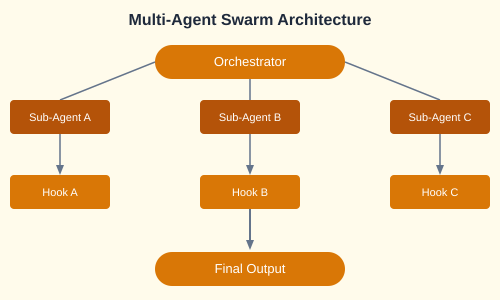

Expert-level vibe engineering uses swarms of sub-agents, each with specialized roles, orchestrated by hooks and custom commands.

// Claude swarm configuration
{
"agents": {
"frontend": {
"role": "Frontend Developer",
"context": ["/frontend/**", "tailwind.config.js"],
"hooks": {
"pre-commit": "lint:check",
"post-deploy": "e2e:test"
}
},
"backend": {
"role": "Backend Developer",
"context": ["/backend/**", "requirements.txt"],
"hooks": {
"pre-commit": "pytest",
"post-merge": "migrate:db"
}
}
}
}Swaroms are groups of agents that work in parallel on different aspects of a problem. An orchestrator coordinates their outputs.
# Swarm orchestrator pattern
class SwarmOrchestrator:
def __init__(self):
self.agents = {
"planner": Agent("plan"),
"coder": Agent("code"),
"tester": Agent("test"),
"reviewer": Agent("review")
}
async def run(self, task):
plan = await self.agents["planner"].run(task)
code = await self.agents["coder"].run(plan)
test_report = await self.agents["tester"].run(code)
review = await self.agents["reviewer"].run(code, test_report)
return reviewExecute agents remotely in cloud sandboxes (Sprites.dev, Modal) for secure, scalable execution.
claude --sandbox sprites # Run in cloud sandboxThe Claude Agent SDK enables programmatic agent creation and orchestration for large codebases.
pip install claude-agent-sdk
from claude_agent import Agent, Swarm
agent = Agent(
name="CodeReviewer",
model="claude-sonnet-4-20250514",
instructions="Review code for bugs, security, and style."
)
swarm = Swarm(agents=[agent], orchestrator="sequential")
result = swarm.run("Review the PR #42 changes")The Gastown orchestration pattern enables parallel agent execution with dynamic task assignment.
Build a complete trading platform using multi-agent swarms: